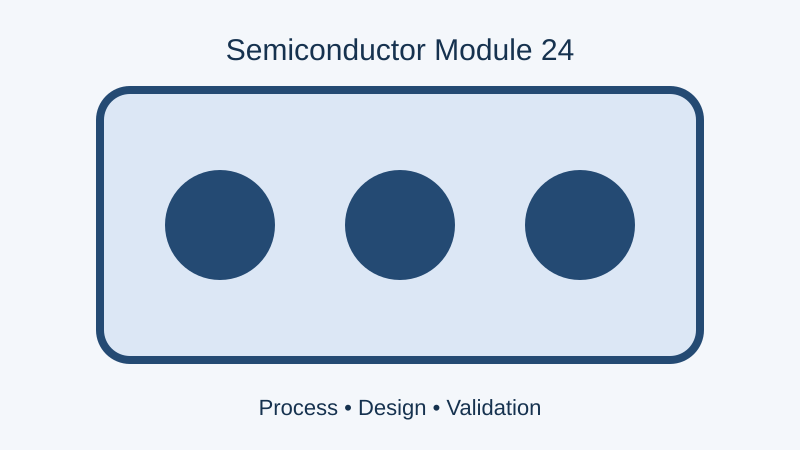

Generic semiconductor content for process integration, yield control, and line qualification. Dataset region 2.
Overview
This topic describes process integration, yield control, and line qualification. It is generated for large-scale authoring, indexing, post-processing, search, and publishing validation.
Figure: Process Integration visual 06131

Procedure
Verify the process recipe and approved operating window.
Load the wafer lot and validate equipment readiness.
Execute the configured process and capture metrology results.
Compare the measured values against specification limits.
Record deviations and initiate corrective action where required.